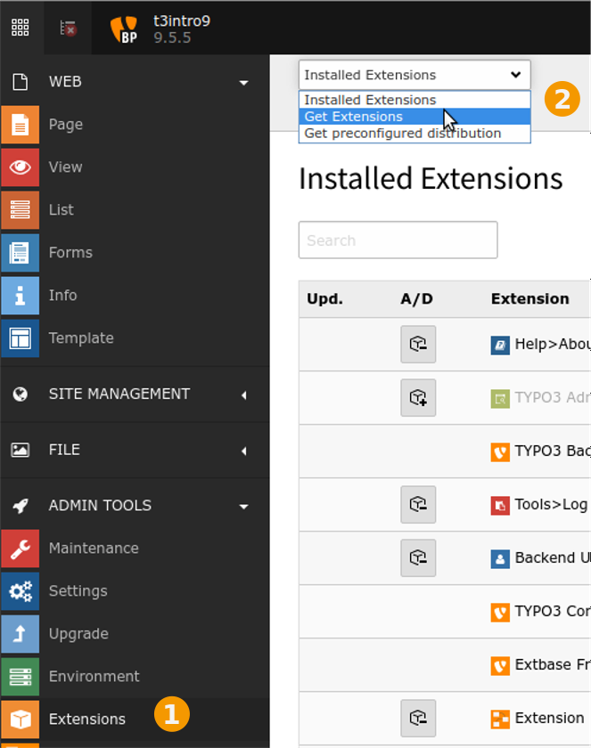
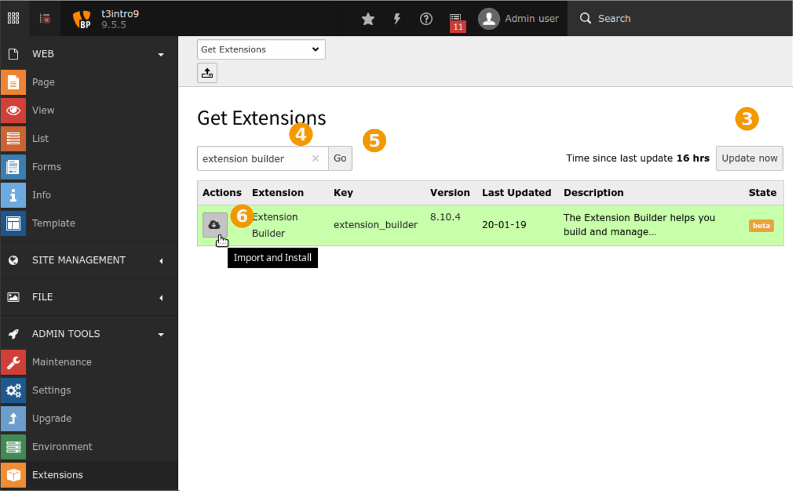

Extension Installation¶
Tip
If you have installed TYPO3 with Composer, you should also install extensions with Composer.
In the context of the TYPO3 extension manager (“EM”), the words “install” and “uninstall” differ from their mainstream meaning. To avoid mixing these terms up with the other EM verbs, here is a clarification:
- Import
- Downloading an extension from TER and copying it to
typo3conf/ext/. - Install
- Activating the already imported extension inside the extension manager and performing database changes mandated by the extension.
- Uninstall
- Deactivating an extension, but leaving it on the disk.
- Remove
- Deleting extension files permanently from disk.
Install an Extension Without Composer¶
In the backend:
Got to “ADMIN TOOLS” > “Extensions”
In the Docheader, select “Get Extensions”
Select “Get Extensions” in Extension Manager
Click “Update now”
The button is on the top right.
Search for the extension and install
Enter the name of the extension in the search field
Click on “Go”
Click on the Action icon on the left for the extension:
“Import and Install”
Now the extension is installed, but not activated. To activate:
Choose “Installed Extensions” in the Docheader
Click on the icon with a “+” sign for your extension in the “A/D” column.
Uninstall an Extension Without Composer¶
If you installed TYPO3 via composer you should uninstall Extensions via composer.
Check Dependencies¶
First find out, which other extensions and functions of your TYPO3 installation are dependent on the extension you want to uninstall. You can find out about the dependencies by checking the Extension Repository. Look for the extension you want to uninstall and the others you have installed. Read in each extensions manual the sections ‘Dependencies’ and ‘Reverse dependencies’.
Contemplate, whether you made referrals to the extension in any setup, config or other TypoScript section. Check if you included a plugin from the extension in your web site. Think of the results of removing them and finally do it.
If you are working locally or on a test server you might as well try to uninstall the extension. The Extension Manager
warns you about dependencies that are written in an extensions ext_emconf.php constraints section. Note however
that you depend on the extensions developers faithfully noting all dependencies in this config file.
If you get an exception and can’t even access the Extension Manager anymore because of it, you can uninstall / install
extensions manually with PackageStates.php as a last resort, see Uninstalling an Extension Manually
Tip
Be sure not to uninstall extensions by trial and error on production systems, expecially not under time pressure.
Uninstall / Deactivate Extension via TYPO3 Backend¶
Log into the TYPO3 Backend and open the Extension Manager (‘Ext Manager’). From the menu choose ‘Install extensions’. You get an overview about installed extensions.
On the left side you see an icon, which shows the status of each extension, and what you can do:
- Extension Install Icon with plus sign: The extension is not installed. (Click once to install)
- Extension Uninstall Icon with minus sign: The extension is installed and running. (Click once to uninstall)
Next to the extension you want to uninstall click on Extension UnInstall Icon. After some seconds the icon changes to the grey Extension Install Icon.
Remove an Extension via the TYPO3 Backend¶
After successfully uninstalling an extension via the Extension Manager you can permanently remove the extension by clicking on the waste-basket symbol “Remove” beside the extensions entry in the Extension Manager.
Uninstalling an Extension Manually¶
At times an extension causes a problem and the TYPO3 Backend can not be opened anymore due to it. In such a case the extension can be uninstalled manually. This is not common practise but a last resort.
Since LTS8 this can be done by removing the extensions configuration from the file PackageStates.php
Open the file
typo3conf/PackageStates.phpSearch for your ext_key in the array.
'ext_key' => [ 'packagePath' => 'typo3conf/ext/ext_key/', ], ...
Remove the entry.
It is no longer possible to remove an extension by setting 'state' => 'inactive' as was possible in LTS 6 and 7.
In LTS 6 and 7 this can be done by editing the file PackageStates.php
Open the file
typo3conf/PackageStates.phpSearch for your ext_key in the array.
'ext_key' => [ 'composerName' => '...', 'state' => 'active', 'packagePath' => '.../', 'suggestions' => [], ], ...
Change
'state' => 'active'to'state' => 'inactive'
Removing an Extension Manually¶
Removing an extension manually is not common practice and should only be done as a last resort. You should only remove
an extension that you uninstalled successfully. Make a backup first. Then you can permanently
remove an extension by removing its folder at typo3conf/ext/[extensionname]. The corresponding database tables
can be removed in the Install Tool -> Important Actions -> Database analyzer -> Compare current database
with specification.
Install an Extension With Composer¶
Hint
These are the same steps that are used for installing a distribution with Composer.
On the command line:
Find out the Composer package name and extension key of the extension:
Use
composer requirecomposer require <packagename>
For example:
composer require georgringer/news
This will add the extension requirement to your
composer.jsonand install the extension.The extension will - not yet - be active. You must activate it with:
Activate
./vendor/bin/typo3 extension:activate <extension key>
For example:
./vendor/bin/typo3 extension:activate news
Remove Extensions With Composer¶
Find out Composer Package Name for an Extension¶
For example go to the Extension Repository, and search for the extension.
You should see the Composer command under “Composer support”, for example for the extension news.
Here, the package name is georgringer/news.
Detail view for extension “news”
Often the package name will be vendor + slash + extension key. However, if the extension key contains an underscore, it is replaced with a slash in the package name. Example for Extension Builder:
- extension key: extension_builder
- Composer package name: friendsoftypo3/extension-builder
Extension Dependencies¶
This section is about finding out about extension dependencies for Composer installation.
When you install an extension, another extension may automatically have been installed as was the case for the installation of the Introduction Package: The Introduction Package depends on the Bootstrap Package and this extension was installed as well.
This is relevant, because after the installation, both need to be activated.
You can see the dependencies on https://packagist.org (for example for the Introduction Package) or in the composer.json file of the extension, for example:
public/typo3conf/ext/introduction/composer.json:
"require": {
"typo3/cms-core": "^9.5",
"typo3/cms-impexp": "^9.5",
"typo3/cms-form": "^9.5",
"typo3/cms-indexed-search": "^9.5",
"typo3/cms-felogin": "^9.5",
"bk2k/bootstrap-package": "^10.0"
},
Here, the package name is bk2k/bootstrap-package, but the extension key is bootstrap_package, as is explained in Find out Composer Package Name for an Extension.
Additional Information¶
The following is independant of whether you install with Composer or without.
Find out the Extension Key for an Extension¶
Again, go to the Extension Repository, and search for the extension.
Detail view for extension “news”
The extension key is listed on the top. For the
extension news,
the extension key is news.
You can also see the extension key in your file system in the directory
public/typo3conf/ext/. The directory name of the extension is the
same as the extension key.